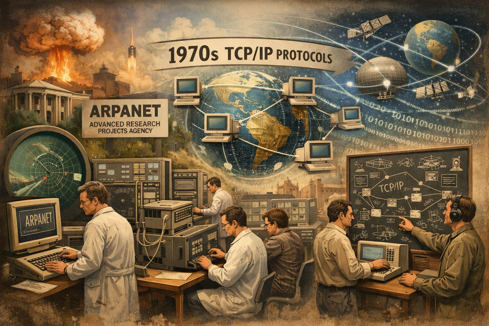
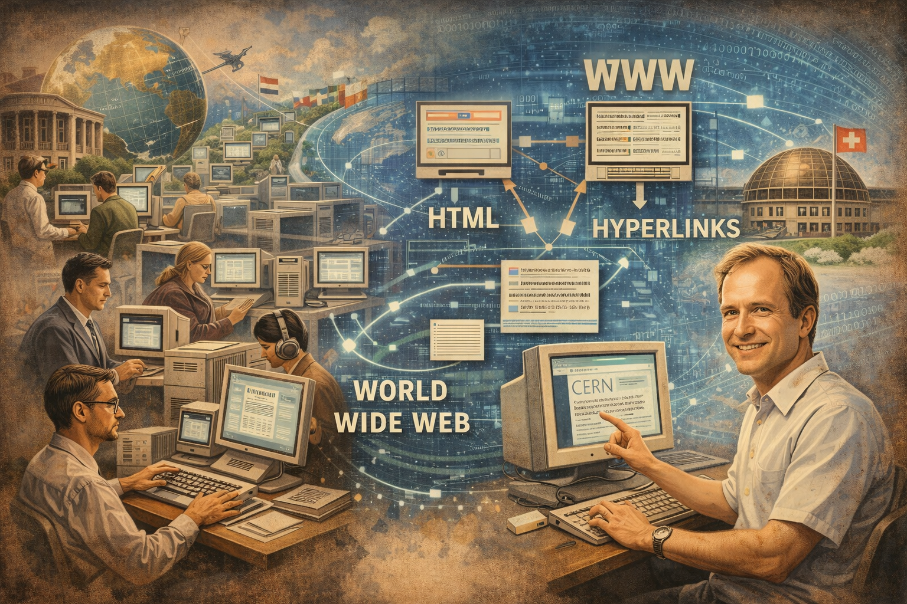

A História da Internet começa durante a Guerra Fria, na década de 1960, quando os Estados Unidos buscavam
formas de manter a comunicação entre computadores mesmo em caso de ataques ou falhas em partes da rede.
Nesse contexto, o Departamento de Defesa americano criou a ARPANET, um projeto que conectava
computadores de universidades e centros de pesquisa. O objetivo era permitir o compartilhamento de
informações e recursos entre diferentes instituições.
Com o tempo, a rede começou a crescer e novos pesquisadores passaram a trabalhar em formas de melhorar a
comunicação entre os computadores. Na década de 1970, foram criados os protocolos TCP/IP, que
padronizaram a forma como os dados eram enviados e recebidos. Essa padronização foi fundamental para que
diferentes redes pudessem se conectar entre si, dando origem ao que hoje conhecemos como Internet.

Na década de 1980, a Internet começou a se expandir para além do meio militar e acadêmico. Universidades e
instituições de pesquisa de vários países passaram a se conectar à rede. Mesmo assim, o acesso ainda era
limitado e exigia conhecimentos técnicos.
Uma grande mudança aconteceu no início da década de 1990, quando o cientista britânico **Tim Berners-Lee**
criou a World Wide Web (WWW) no CERN, na Suíça. Ele também desenvolveu o HTML, a linguagem usada
para criar páginas na web, além do conceito de hiperlinks, que permitem conectar diferentes documentos por
meio de links. Isso tornou a navegação na Internet muito mais simples e acessível.

A partir daí, a Internet começou a se popularizar rapidamente. Surgiram os primeiros navegadores, como o
Mosaic e depois o Netscape, que facilitaram o acesso aos sites. Nos anos 2000, com o avanço da
tecnologia e a expansão da banda larga, a Internet se tornou parte do cotidiano das pessoas.
Hoje, a Internet conecta bilhões de dispositivos ao redor do mundo e é utilizada para comunicação, estudo,
trabalho, entretenimento e comércio. Redes sociais, serviços de streaming, jogos online e diversas outras
ferramentas fazem parte desse grande sistema que continua evoluindo constantemente.